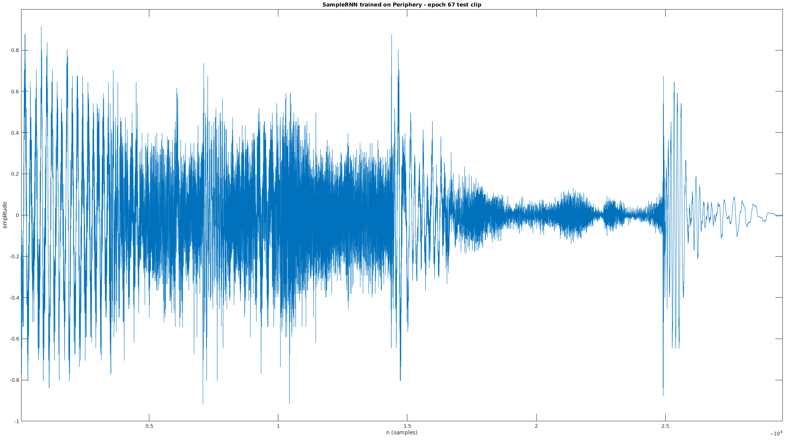

An AI music experience, prepared by Sevag for MUMT 618
Machine learning and deep learning techniques in recent years have an increasing presence in the field of musical acoustics[1]. As a preliminary introduction to generating music using neural networks, you can view my paper presentation introducing WaveNet[2], SampleRNN[3], and other novel approaches to neural audio.
In the presentation, I outlined that there exist both unconstrained, unstructured models for generating audio in the waveform domain (resulting in babbling or confusing outputs), and structured physical computational models that have been used in traditional audio synthesis (that don't sound very natural).
A mixed approach of using machine and deep learning to estimate physical model parameters trained on real data is a good middle ground. In this project, I'll be using SampleRNN for unstructured neural audio synthesis. I'll also explore the Magenta Differentiable DSP library[4] for a hybrid machine learning + physical model approach. From this diagram, I'll be targeting the top left and top right images:
By augmenting ML methods (top left) with physical models (bottom right) to obtain hybrid models (upper right), a synergy of the strengths of physical intuition and data-driven insights can be obtained [1]
Motivation
The dadabots[5] have been creating music with neural networks, trained on the music of specific artists:
My initial idea was to see if I could imitate the dadabots by training SampleRNN in a variety of experiments:
Train on a single album and generate music, just to familiarize myself with SampleRNN
Two different artists, trained separately, to generate music that sounds like Artist A and Artist B
Combined training on both artists, to generate music that sounds like Artist A + Artist B
Training on separate instruments to layer the results over each other
Training on separate song segments (e.g. choruses, verses, guitar solos) and concatenating the generated outputs to make a Frankensong
To supplement the illusion of a "real" music artist, I also want to generate album art using additional AI techniques; as these are not directly related to musical acoustics, they'll occupy a small section at the bottom of this report.
Experiment setup
A difficult step in any machine learning experiment is actually reproducing the claims of papers[6]. Most of the models have outdated dependencies. You most likely can't run something that was published in 2017, as the popular machine learning frameworks on which most papers depend (Torch, Keras, Tensorflow) are evolving at a breakneck pace.
As an example, I tried to unsuccessfully run the original SampleRNN code, and many other forks, until finding a good one:
https://github.com/soroushmehr/sampleRNN_ICLR2017
https://github.com/worosom/docker-zvk-SampleRNN
https://github.com/ZVK/sampleRNN_ICLR2017
The dadabots' own fork: https://github.com/Cortexelus/dadabots_sampleRNN/wiki/Installing-Dadabots-SampleRNN-on-Ubuntu
I finally lucked out and found the RNCM (Royal Northern College of Music) PRiSM (Practice and Research in Science and Music) lab released a modern implementation of SampleRNN with Tensorflow 2[7].
To demonstrate the futility in trying to do this myself, one can read the accompanying PRiSM blog post[8]:
PRiSM is shortly going to publish its own implementation, using TensorFlow 2, and we’ll be explaining the features of the PRiSM SampleRNN in our next instalment – when we will also make the code available on PRiSM’s GitHub pages, along with a number of pretrained and optimised models.
If we check the GitHub commits[9], we can see that it took the researcher, Dr. Christopher Melen, around 9 months to get the repository into the shape it was in when I was able to get it running. For me, as a complete beginner to machine learning, to have done the same, is highly unlikely. This gives me slight unease at how unfriendly machine learning models are to beginners.
Hardware and OS setup
I ran all of the training and experiments on my personal desktop computer, consisting of:
AMD Ryzen 7 3700X 8c/16t processor
32GB RAM
1TB NVME storage
NVIDIA RTX 2070 SUPER GPU
The OS is Fedora 32, and NVIDIA drivers and CUDA toolkit were installed using negativo17's Fedora-nvidia repositories[11].
Python setup + minor code tweaks
I forked the prism-samplernn codebase to my own GitHub profile to make a minor adjustment in the scripts[12].
Without this parameter, the training would crash on my GPU (RTX 2070 SUPER) with a mysterious error message, "Fail to find the dnn implementation". It's an esoteric fix that one can find scattered across GitHub[13].
The Python setup is straightforward using conda[14] and following the project's README.md:
The first thing I tried was to train SampleRNN on Animals as Leaders' self-titled album:
I downloaded the audio using youtube-dl, converted it to 16kHz mono with ffmpeg (recommended for SampleRNN to perform better), split it up into chunks (ignoring silence) using the prism-samplernn script chunk_audio.py, and ran the training with default parameters:
This emitted some generated clips during the training. Let's listen to 2 of the more musically interesting clips (a lot of them are just silence), generated at epoch 20 and 85 of the 100-epoch training. An epoch is one cycle of the entire training dataset - this means that the neural network observed the same album 100 times iteratively to learn how to model it:
Epoch 20:
Epoch 85:
After the training was done (it took ~3 days on my machine), I generated 2 10-second clips of what I thought would be "Animas-as-Leaders-esque" music. The generate command is:
This says to use the model checkpoint 90. Even though we specified 100 epochs in the training, the model has an intelligent stop when it sees that additional training is not improving the model. In this case, it seems like 90 epochs exhausted the model's learning ability. Here's one of them (both sound equally bad):
Experiment 0 lessons
Recall that in the SampleRNN paper, the multiple layers of the RNN determined the learning of audio patterns at different temporal scales:
Higher RNN layers map to wider temporal scales [3]
The lowest temporal scale (consecutive samples) represents very low-level audio features (e.g. timbre), while higher scales can (hypothetically) go as far as representing repeating choruses or verses minutes apart.
With this in mind, I applied tweaks that Karl Hiner[15] did in his experiments - for my next experiment, I would try some or all of the following:
Increase the number of RNN layers from 4 to 5 to try to create more cohesive music
Use more training data than just one album
Increase epochs from 100 to 250 (longer training may lead to better results)
SampleRNN hyperparameters table
*Hyperparameter in machine learning = something that a human must set in the model, the model can't learn it on its own. As opposed to parameters, which are the internal magic numbers that are computed
I'll summarize the available SampleRNN hyperparameters and other customizeable steps compared across the original 2017 ICLR implementation, the Dadabots fork, the PRiSM fork which I use throughout the rest of this report, and finally my own modifications to the PRiSM parameters after experiment 0:
Original
Dadabots
PRiSM
Mine
Descr
RNN layers
4
5
4
5
Temporal timescale of learning (more layers = learn patterns on wider timescale)
Tiers
2 or 3
2 or 3 (2 recommended)
3
3
Tiers of RNN (more = wider temporal timescale)
Frame sizes (corresponds to tiers)
16
16
16,64
16,64
Samples apart between low and high timescales
Sample rate
16000 (fixed)
16000
16000
16000
Sample rate of training/generating waveform (lower = faster learning, better able to learn long-timescale patterns)
Training input
No details
Chop albums into 8s + 1s overlap
Chop albums into 8s + 1s overlap
Chop albums into 8s + 1s overlap
Suggestions on how to prepare training data
Epochs
Not customizeable
Not customizeable
100
100, 250
Entire cycles of training on the same data (more = possibly better learning, but not necessarily)
Experiment 1: longer training on multiple albums
For my next experiment, I downloaded instrumental versions of the albums of Periphery (instrumental - I didn't want vocals mixing into the results, as I want to focus on musical instruments acoustics) and Mestis (an instrumental band). The data fetch and preprocessing scripts are available in my prism-samplernn fork:
#!/usr/bin/env bash
echo "Fetching training data - youtube-dl wav files for Mestis and Periphery albums"
# youtube playlists for Mestis - Eikasia, Polysemy, Basal Ganglia
mestis_album_1="PLNOrZEIoYAMgLJeZeCUEhABLPz7yqkyfI"
mestis_album_2="PLfoVvOUi1CqV0O-yMdOvTff_vp8hOQnWi"
mestis_album_3="PLRK89uMjq03BMsxBKFGBcDAh2G7ACwJMK"
youtube-dl -ci -f "bestaudio" -x --audio-format wav -i ${mestis_album_1}
youtube-dl -ci -f "bestaudio" -x --audio-format wav -i ${mestis_album_2}
youtube-dl -ci -f "bestaudio" -x --audio-format wav -i ${mestis_album_3}
# youtube playlists for instrumental Periphery albums - Periphery III, I, II, IV, Omega, Juggernaut
periphery_album_1="PLSTnbYVfZR03JGmoJri6Sgvl4f0VAi9st"
periphery_album_2="PL7DVODcLLjFplM5Rw-bNUyrwAECIPRK26"
periphery_album_3="PLuEYu7jyZXdde7ePWV1RUvrpDKB8Gr6ex"
periphery_album_45="PLEFyfJZV-vtKeBedXTv82yxS7gRZkzfWr"
periphery_album_6="PL6FJ2Ri6gSpOWcbdq--P5J0IRcgH-4RVm"
youtube-dl -ci -f "bestaudio" -x --audio-format wav -i ${periphery_album_1}
youtube-dl -ci -f "bestaudio" -x --audio-format wav -i ${periphery_album_2}
youtube-dl -ci -f "bestaudio" -x --audio-format wav -i ${periphery_album_3}
youtube-dl -ci -f "bestaudio" -x --audio-format wav -i ${periphery_album_45}
youtube-dl -ci -f "bestaudio" -x --audio-format wav -i ${periphery_album_6}
mkdir -p periphery-raw
mkdir -p mestis-raw
find . -maxdepth 1 -mindepth 1 -type f -iname '*PERIPHERY*.wav' -exec mv {} periphery-raw/ \;
find . -maxdepth 1 -mindepth 1 -type f -iname '*MESTIS*.wav' -exec mv {} mestis-raw/ \;
find . -maxdepth 1 -mindepth 1 -type f -iname '*Javier*.wav' -exec mv {} mestis-raw/ \;
find . -maxdepth 1 -mindepth 1 -type f -iname '*Suspiro*.wav' -exec mv {} mestis-raw/ \;
find . -maxdepth 1 -mindepth 1 -type f -name '*.wav' -exec rm {} \;
mkdir -p mestis-processed
mkdir -p periphery-processed
echo "Processing each wav file to 16kHz mono"
for f in mestis-raw/*.wav; do
ffmpeg -i "${f}" -ac 1 -ar 16000 "mestis-processed/$(basename "$f")";
done
for f in periphery-raw/*.wav; do
ffmpeg -i "${f}" -ac 1 -ar 16000 "periphery-processed/$(basename "$f")";
done
mkdir -p periphery-chunks
mkdir -p mestis-chunks
mkdir -p mixed-chunks
for f in mestis-processed/*.wav; do
python ../chunk_audio.py --input_file "${f}" --output_dir mestis-chunks --chunk_length 8000 --overlap 1000
python ../chunk_audio.py --input_file "${f}" --output_dir mixed-chunks --chunk_length 8000 --overlap 1000
done
for f in periphery-processed/*.wav; do
python ../chunk_audio.py --input_file "${f}" --output_dir periphery-chunks --chunk_length 8000 --overlap 1000
python ../chunk_audio.py --input_file "${f}" --output_dir mixed-chunks --chunk_length 8000 --overlap 1000
done
What the script does is:
Fetch files for every Mestis song (from YouTube playlists + youtube-dl)
Fetch files for every instrumental Periphery song (from YouTube playlists + youtube-dl)
Pre-process them into 16kHz mono with ffmpeg (for optimal training)
Apply the chunk_audio.py script to split into non-silent 8-second chunks with 1 second overlap
Create 3 sets of training data - periphery-chunks, mestis-chunks, mixed-chunks
My intention was to train the model on each of the sets of training chunks, to create generated music that:
It took 1 week to complete the training on Periphery only. I bold 1 week because, in an academic semester of 3 months, taking 8% of the semester to run one single experiment in a large project concerns me. My limitation is computational power. I could have taken advantage of expensive hardware (e.g. using the resources of my future research lab, DDMAL), but I felt that this would go against the spirit of an independent student project.
Also, the conclusion that running all of my envisioned experiments is impossible in the time frame of a semester is actually a valuable outcome. It shows the difficulty of black-box computational models where the large companies or labs publishing papers are leaps and bounds ahead of casual readers due to the unprecedented compute power available to them(FIND REFERENCE FAANGMAN NEURAL NETWORKS).
Periphery only results
Here's a 30-second clip output from the training on Periphery only:
Another disappointing trait is that most generated audio consists of silence. I was very lucky to get almost 30 seconds of musical content in a single clip. Subjectively, this sounds nothing like Periphery:
This nullifies my hypothesis, that it's possible to expect a neural network trained (by an amateur) for 1 week to sound like a band of real professional musicians. A trend I witnessed in all of the Periphery generated clips is the lack of palm-muted distorted guitar chords (a sound very characteristic to Periphery) in the final outputs. All of the harmonic content seems to be a high-pitched whistling, but there are convincing drum sounds:
Epoch 67:
Epoch 70:
Generated audio visualization
The above clips show collections of realistic note onsets. One of my original statements about WaveNet and SampleRNN was that they could produce music with convincing dynamics and timbre, to make us believe real humans played it. Observing various aspects of the waveform in the time and frequency domain should be useful.
Let's view each clip (epochs 67, 70) in the time domain and frequency domain (with a spectrogram):

Although this is subjective, one can see the dynamic nature of the produced audio in the plots above. It really does look like there are real musical variations in the complex waveform (aside from the totally blank silences which are odd in real music).
Mu-law vs linear quantization
Karl Hiner's blog post touches on WaveNet's mu-law quantization, and claims it sounds better than SampleRNN's linear quantization. In fact, I found that every SampleRNN implementation I found had options for linear and mu-law quantization (perhaps it was added later). In fact the original ICLR 2017 paper even has an "a-law quantization" (similar to mu-law). Let's hear what each sounds like:
Periphery epoch 83, mu-law quantization:
Periphery epoch 83, linear quantization WARNING! LOUD!:
In my subjective listening test, the linear quantization output is very loud, almost to the point of distortion and clipping. The mu-law quantization is outputting music with more subtle volume, possibly since its more suited for the logarithmic human experience of loudness.
Rolling experiment 2+ into experiment 1
As noted, experiment 1 took 1 week to train, or 8% of the Fall semester. To top it off, the results were very divorced from my expectations:
The resulting generated audio is mostly silence and junk
There are some interesting potentially musical sounds, but it's all high-pitched whistling and doesn't contain any characteristics of the band Periphery (palm-muted distorted guitar chords, etc.)
I have to generate 100s or 1000s of clips and curate the results to create a final result - the chances of getting 1 cohesive "song" (let's say, 2 minutes of contiguous music) are pretty slim
With this in mind, I didn't see any value in performing training on separate bands, and I didn't think I'd have enough time to train on separate instruments or song segments. Instead, what I did was mix the Mestis data into the Periphery data, and continue training the model (that was initially trained only on Periphery for 100 epochs) for 250 epochs.
This took another week, bringing the sum total of all generative experiments (including failed starts) to 3 weeks. 3 weeks of letting my computer crunch data to compute a model that produces strange, confusing, and mostly silent outputs was a disappointing experience.
In the subsequent generation + curation phases, I'll use different model checkpoints (between epochs 0 and 250) to generate music at different points of the model's knowledge.
Training results
The results of training SampleRNN are stored in the logdir directory, in timestamped directories storing checkpoints for intermediate epochs in training. Here's a tree view of of the training. The size of the training directory is 51GB, after having been trained on all of the albums listed above (709MB of music):
An important thing to note is that the Dadabots never claimed that their model spit out perfect music. They focus heavily on curating[16] the resultant audio clips. From a blackbox neural network that produces any kind of audio, from silence, to a cacophony of sounds, and everything in between, one needs to curate the results to combine them into a cohesive piece of music without long periods of silence.
The goal of my automated curation script is to:
Load every clip generated by the trained SampleRNN model
Trim out the silence
Potentially apply some MIR techniques* to group similar clips together, to create the sense of a "cohesive" musical piece
Concatenate the result clips of sound with crossfading
*Ideally, we would use popular MIR Python libraries (librosa, madmom, Essentia) to assist us in the curation step, e.g. by grouping similar clips by their musical content. However, as this is more in the domain of MUMT 621 (music information retrieval), and not an easy task, I won't spend too much time on it.
I want to minimize the amount of visual/manual audio curation that I do, and rely only on the simple curation listed above.
Generating music with the trained model
First, I use the trained model described earlier to generate audio clips at various epochs. I chose the epochs randomly - the ones before checkpoint 100 are trained only on Periphery, while the ones after checkpoint 100 are trained on a mix of Periphery and Mestis (aka "Mestiphery").
According to the dadabots' README[18], they don't necessarily accept that the latest training epoch is the best one. That's why I picked a variety of epochs:
However, we found the latest checkpoint does not always create the best music. Instead we listen to the test audio generated at each checkpoint, choose our favorite checkpoint, and delete the newer checkpoints, before generating a huge batch with this script.
I generated sequences of different durations. The generate commands are as follows:
After listening to several of the files manually, I noticed that the lower epochs produce better, more cohesive, and longer bits of music. This to me indicates the failure of experiment 2, of mixing Periphery + Mestis and training for 250 epochs. This could be due to the nature of the training data - the neural network is trying to generate samples that minimize error for two distinct musical artists and styles, so it can resort to outputting nothing (to minimize numerical error between the two sets of training data). Also, like the Dadabots say, perhaps training for too long isn't beneficial.
Chromaprint-based curation script
Supplementing neural audio with structured synthesis
Magenta and Differentiable DSP
Training Karplus-Strong parameters with machine learning
Creating some pieces of synthesized music with trained Karplus-Strong + algorithmic music generation
Album art generation
Putting it all together
Final result
Conclusion
References
mlacoustics (citations.bib)
wavenetpaper (citations.bib)
samplernnpaper (citations.bib)
magentaddsp (citations.bib)
dadabots (citations.bib)
new ref: machine learning reproducability crisis https://petewarden.com/2018/03/19/the-machine-learning-reproducibility-crisis